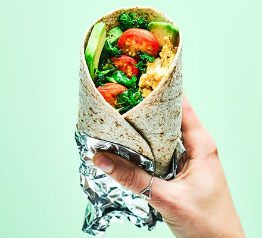

Breakfast Burrito

Make a nutritious cocoon for breakfast ingredients with a wholemeal wrap.
We’ve included protein-rich eggs and avocado to add good fats to this burrito
Ingredients
- 1 tsp chipotle paste
- 1 egg
- 1 tsp rapeseed oil
- 50g kale
- 7 cherry tomatoes, halved
- ½ small avocado, sliced
- 1 wholemeal tortilla wrap, warmed
Steps
- Whisk the chipotle paste with the egg and some seasoning in a jug. Heat the oil in a large frying pan, add the kale and tomatoes.
- Cook until the kale is wilted and the tomatoes have softened, then push everything to the side of the pan. Pour the beaten egg into the cleared half of the pan and scramble. Layer everything into the centre of your wrap, topping with the avocado, then wrap up and eat immediately.